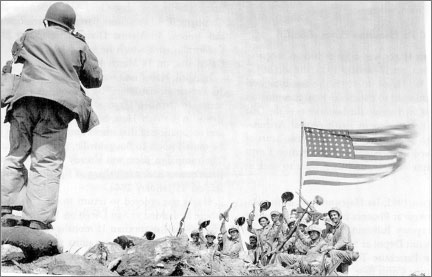

BEN CURTIS: Going back to that skull photo that you were talking about. I have a basic knowledge of the FSA history, but not in depth in any way. A photo like that, if you were taking it for artistic purposes, then it’s perfectly acceptable to move the skull, to put it in nice light, to move this here, move this there, if your photographs are purely for artistic consumption. The reason why you’re taking the photos affects everything. If you’re doing fine art photography, you can do what you want. But if your photos are intended to represent the truth, then it’s a completely different situation .
ERROL MORRIS: Truth in photography is an elusive notion. There may not be any such thing.
BEN CURTIS: You can have one event, say, an explosion takes place somewhere in Iraq . Now, there is one single reality to that situation. Now, in our imperfect world, there are five different points of view to that situation. Insurgents are going to see it one way. American military will see it another way. The public will see it another way . And more and more, it seems impossible to bridge those realities. These realities seem so disparate, it seems very hard to bridge those realities .